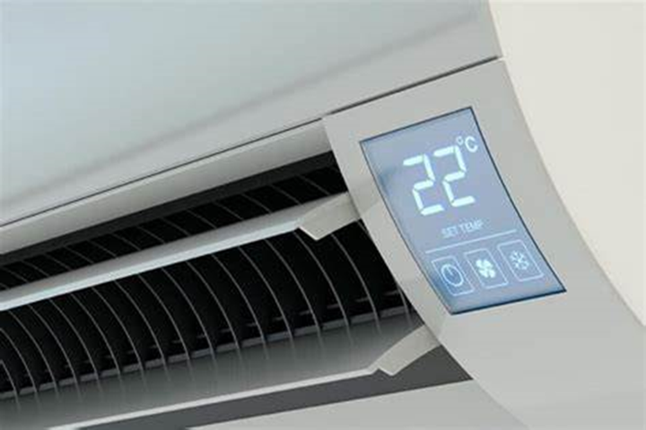
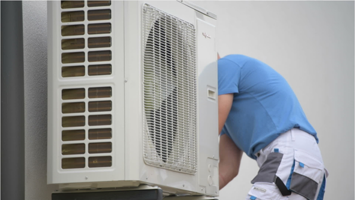
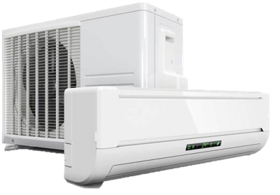
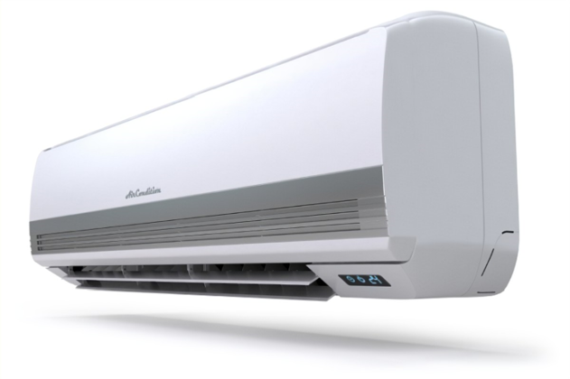
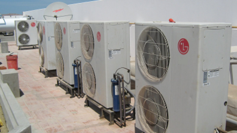
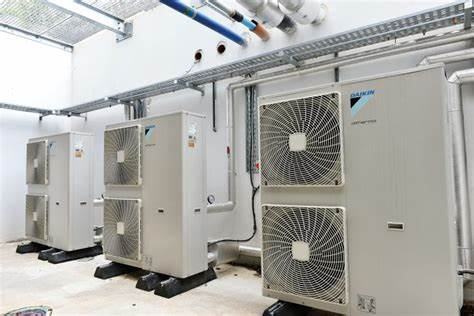
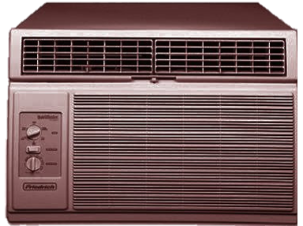
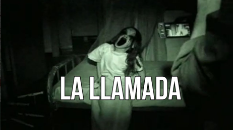

<!-- <section>
            <h2>Quienes somos</h2>
            <div class="seccion secciones-izq">

                <div class="imagen"></div>
                <div class="text-imagen">
                    <p>Las reuniones en el trabajo son cordiales y se entablan conversaciones sobre como encarar los diferentes trabajos, esos momentos son la herramienta fundamental para que los equipos funcionen de manera coordinada, se sientan comprometidos,
                        y alineados con los proyectos y aporten lo mejor de sí. Cuando están bien planificadas suelen ahorrar mucho tiempo al equipo. Exploramos los escenarios de trabajo para llevar a cabo la reunión, en un bar, en el trolebús dentro
                        o fuera de la empresa, incluso tal vez quizas alguna vez en lugares un poco más informales, como terrazas, pizzerías, en un baño de algún bar, en parques o museos,… ...en la playa en verano, etc. Los contextos suelen inspirar mucho.
                        Así que cambiar de lugar posiciona a los compañeros en otra perspectiva contribuyendo a ser más creativos, y suelen generarse ambientes más desenfados. Nos contamos chistes y boludeamos bastante también.
                    </p>
                </div>
            </div>
        </section>
        <section>
            <h2>Galería</h2>
            <div class="seccion secciones-der">
                <div class="imagen galeria">
                    
                    
                    
                    
                    
                    
                </div>
                <div class="text-imagen">
                    <p>Estas imagenes son robadas de gooooglee, porque no podemos promocionar los trabajos que hacemos(va contra la política de la empresa). Pero mas o menos eso es lo que hacemos. No siempre funcionan y tampoco damos ningún tipo de garantías
                        sobre los trabajos realizados.</p>
                    <p>El profesionalismo y la proligidad de los trabajos realizados es lo único que nos respalda</p>
                </div>
            </div>
        </section>
        <section>
            <h2>Tecnología</h2>
            <div class="seccion secciones-izq">
                <div class="imagen"></div>
                <div class="text-imagen">
                    <p>Trabajamos únicamente tecnología de punta, no especificamos de que año. Los entragamos en condiciones como para que enfrien un poco, pero no tenemos ningún tipó de responsabilidad si esto no sucede.</p>
                </div>
            </div>
        </section>
        <section>
            <h2>Asesoramiento</h2>
            <div class="seccion secciones-der">
                <div class="imagen"></div>
                <div class="text-imagen">
                    <p>Estamos frente a un momento de grandes cambios en la empresa. En este último tiempo venimos sin un rumbo claro, además de estar complicados económica y financieramente. Nos estuvimos pidiendo a todos un esfuerzo extra en el desempeño
                        de nuestras actividades. Y sinceramente nos está costando valorarlo en diversos aspectos. Juan, por mencionar un ejemplo, quien viene trabando sin parar desde hace un tiempo, la semana pasada pidió 15 minutos para hacer un trámite
                        personal y nos dolió no poder otorgárselo. Y así fueron pasando cosas similares con cada uno de nosotros.</p>
                    <p>Les pido a todos los clientes y amigos que por favor nos molesten con todo tipo de preguntas y sobre todo quejas. Sabremos derivarlos prontamente con algún centro de asistencia pisicológica o de ayuda legal para que los asesoren prontamente
                        y así nos inicien una demanda en caso que corresponda.</p>
                </div>
            </div>
        </section>
        <section>
            <h2>Contacto</h2>
            <div class="seccion secciones-izq">
                <div class="imagen"></div>
                <div class="text-imagen">
                    <p>Acá dejamos algunos contactos para que se puedan comunicar. Dejamos el telefono de la vecina del fondo porque el nuestro lo cortaron.</p>
                    <p>El mail es de la mamá de la vecina también</p>
                    <p>Y no molesten mandando mensajitos todo el tiempo por guasát porque lo cancelamos enseguida.</p>
                </div>
            </div>
        </section> -->